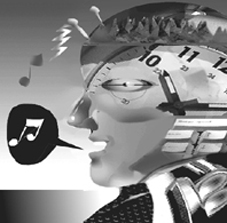

El Siglo que Empaquetó la Música
El Diario de Caracas
12-11-1999
Los sonidos de la música no tienen existencia tangible, pero han acompañado al hombre desde el origen de los milenios. Sólo en este último la tecnología pudo meterla en un potecito y guardarla.
De niño siempre me preocupé en saber
de qué color era la música y no podía
entender la
existencia de algo que no se podía tocar pero que al
mismo
tiempo
podía despertar tantos sentimientos. Según las
ilustraciones
de los Mayas, como aparecen reproducidas en la Historia
General de
las
Cosas de Nueva España de Fray Bernardino de
Sahagún
del
siglo XVI, los sonidos son unas nubecitas enrizadas que brotan
de la
boca
y de los instrumentos como el bello Teponaztli. Pero en el Siglo
XX
quedan
empatados triunfadores como iconismos representantes de la
música:
la "Clave de Sol" y la "Corchea" flotando en el aire, con
su
corchete
ondulado como el pelo sedoso de una joven. Los músicos de
profesión
podrían calificar estos elementos ya de "pavosos" o
"rayados" y
se espera el amanecer del próximo siglo para que se
cambien por
otros nuevos. La música es tan amplia que una Clave de
Sol no la
puede representar y sólo se podría aguantar hoy en
día
en una de esas corbatas grotescas.
Unos siglos antes de este milenio, en Grecia pintaban en las vasijas delicados instrumentos, trompetas y aulos dobles, pero la música se mantenía invisible. La actividad humana al tocar y danzar marca una imagen certera de la presencia musical en las escasas esculturas y pinturas del siglo V al XI de este milenio, apareciendo con frecuencia una lira o pequeña arpa. Por muchos siglos, la ilustración de un instrumento musical fue la representación permanente más fiel de este arte efímero.
Finalmente a mediados de nuestro milenio se desarrolló la escritura musical en papel y a partir de Ottaviano Petrucci en Venecia surgió la imprenta a principios del siglo XVI. A pesar de no cumplir exactamente con la reproducción de la intención original vía el intérprete, la partitura musical llegó muy de cerca a plasmar eternamente la configuración de ciertos elementos musicales: la altura y el ritmo podían ser determinados en el pentagrama con exactitud . La velocidad del pulso, llamada el Tempo y también la intensidad, o qué tan duro o suave suena, no desarrollaron una notación exacta, guiada más bien por una percepción de contrastes e indicada por términos empíricos. Son justamente estos dos elementos musicales que el intérprete aprovecha para lograr su expresión y variación personal de cualquier pieza, debido a que no están determinados en la partitura con precisión.
En los años cincuenta, con el nacimiento de las posibilidades electrónicas en la música, los compositores sintieron poder cristalizar sus deseos de control total sobre el hecho sonoro junto a la necesidad del pensamiento serialista de convertir los elementos musicales en canales de fórmulas predeterminadas. Pero a la tecnología le faltaba una pieza importante que aparece tres décadas más tarde: la computadora. Sólo que actualmente, contando con todas estas posibilidades en la punta de los dedos, el sentir de los tiempos ha cambiado y nigún creador de nuestro presente necesita crear dentro del ambiente estético del serialismo ni utilizar para su expresión la omni-predeterminación que la caracteriza. En 1977, uno de los compositores más vinculados con las matemáticas, el griego Yannis Xenakis, paradojicamente trató de utilizar una gran computadora para que los niños pudieran dibujar libremente y se interpretara esta creatividad gráfica, eterna aliada de los pequeños, para sintetizar música. En una demostración crucial de estas posibilidades en el festival de la Sociedad Internacional de Música Contemporánea en Bonn de ese año, la computadora le falló, alimentando el escepticismo de los asistentes. Hoy en día ésto es ya un jueguito de CD-ROM regalado en revistas.
A partir del ingenioso Thomas A. Edison a finales del siglo pasado, se concreta el sueño milenario del hombre de atrapar el hecho musical dentro de una taparita. Se empezó con el cilindro de cera, el fonógrafo con discos de acetato, la cinta magnetofónica y la versión práctica del casete. El Siglo XX no ha parado de inventar soportes para guardar la música tal como ella es, en sonido, y ha logrado la maravilla del disco compacto, absolutamente fiel al hecho inicial. ¿Se llegó al final del camino? Coleccionistas, ¡en alerta! Tendrán que cambiar sus colecciones una y otra vez, porque llegó el minidisc, y ahora también el DVD o disco de video digital, con una capacidad de almacenaje insospechada. Pero no boten sus acetatos ni discos compactos todavía: el secreto de la permanencia es la multiplicidad de soportes.
Si desea leer los artículos anteriores,
favor
dirigirse al web arriba indicado.